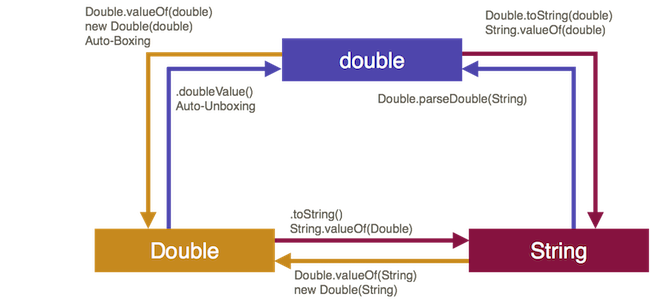

Wrapper-Klassen¶
In Collections lassen sich nur Elemente speichern, die von einem Referenztyp sind. Das heißt es können keine Werte vom Typ int, boolean, double, char, long usw. speichern. Wenn wir z.B. versuchen, eine Liste mit int zu typisieren
List<int> l = new ArrayList<>(); // Fehler !!
bekommen wir einen Fehler angezeigt und können das Programm gar nicht compilieren. Trotzdem wollen wir natürlich auch solche "Werte" in Collections verwalten. Dazu existieren für alle Wertetypen entsprechende Referenztypen, sogenannte Wrapper-Klassen. Diese sind Integer, Double, Float, Short, Byte, Long, Character und Boolean und befinden sich im java.lang-Paket (also dem Standardpaket von Java - muss nicht importiert werden).
Die grundsätzliche Idee von Wrapper-Klassen ist das "Verpacken" (wrappen) eines Wertetyps in einen Referenztyp. Die folgende Abbildung soll das für das Beispiel int ↔ Integer verdeutlichen:

Der int-Wert 10 wird zu einem Typ Integer und somit zu einem Referenztyp. Dafür sind alle Vorteile von referenztypen nutzbar, z.B. Objektmethoden, Vererbung usw.
Welche Wrapper-Klasse zu welchem Wertetyp gehört, wird aus dem Namen erkennbar. Leider ist das aber nicht ganz konsistent. Während die Wrapper-Klassen von boolean, byte, short, long, float und double so heißen, wie die Wertetypen, nur jeweils mit einem Großbuchstaben am Anfang, heißt die Wrapper-Klasse von char Character und die Wrapper-Klasse von int Integer.
| Wertetyp | Referenztyp (Wrapper-Klasse) |
|---|---|
byte |
Byte |
short |
Short |
int |
Integer |
long |
Long |
float |
Float |
double |
Double |
boolean |
Boolean |
char |
Character |
Objekterzeugung¶
Es gibt ziemlich viele Möglichkeiten, um Objekte eines Wrapper-Klassen-Typs zu erzeugen:
- Verwendung des Kontruktors, Parameterwert entweder vom Typ
Stringoder vom entsprechenden Wertetyp, - Verwendung der statischen Methode
valueOf(), Parameterwert entweder vom TypStringoder vom entsprechenden Wertetyp, - sogenanntes Boxing (autmatisches wrappen eins Wertes in seinen Referenztyp).
Wir schauen uns die drei Möglichkeiten am Beispiel von Integer an. Es gilt aber für alle Wrapper-Klassen.
Verwendung des Kontruktors - deprecated¶
Für jede Wrapper-Klasse stehen zwei parametrisierte Konstruktoren zur Verfügung, entweder wird ein entsprechender Wert übergeben (am Beispiel von Integer als ein int-Wert) oder es wird ein String übergeben, der idealerweise einen passenden Wrt entält, also für Integer soll der String eine Zahl enthalten. Am Beispiel von Integer könnte das z.B. so aussehen:
// Konstruktor mit Uebergabe Wertetyp
int i = 100;
Integer iObject1 = new Integer(i);
Integer iObject2 = new Integer(100);
// Konstruktor mit Uebergabe String
String s = "100";
Integer iObject3 = new Integer(s);
Integer iObject4 = new Integer("100");
// Moeglich für alle numerischen Datentypen und boolean
Für Character gibt es nur einen parametrisierten Konstruktor: Character(char value). Die Übergabe eines Strings ist dort nicht möglich.
Wichtig hier ist zu betonen, dass man die Konstruktoren jedoch nicht verwenden sollte. Das hat hauptsächlich Performance-Gründe, sowohl in Zeit als auch in Speicher. Seit Java 9 gelten die Konstruktoren als deprecated, sollten also nicht mehr verwendet werden. Stattdessen wird empfohlen, die statischen Methoden valueOf() zu verwenden.
Die valueOf()-Methoden¶
Die valueOf()-Methoden der Wrapper-Klassen haben zwei wichtige Eigenschaften:
- sie sind statisch, d.h. der Aufruf erfolgt über
Klassenmane.valueOf(), - sie sind sogenannte Erzeugermethoden, denn sie geben ein Objekt der Klasse zurück
Wie bei den Konstruktoren auch, können der Methode entweder ein Wert vom entsprechenden Typ oder ein String übergeben werden, der ein Wert von dem Wertetyp enthält. Beispiele
// Wrapper-Klassen haben die Klassenmethoden
// valueOf(Wertetyp b) ...
Integer iObject1 = Integer.valueOf(100);
Boolean bObject1 = Boolean.valueOf(true);
Double dObject1 = Double.valueOf(5.5);
// ... oder valueOf(String s)
Integer iObject2 = Integer.valueOf("100");
Boolean bObject2 = Boolean.valueOf("true");
Double dObject2 = Double.valueOf("5.5");
Auch hier gilt wieder, dass für Character nur eine valueOf()-Methode existiert, nämlich valueOf(char c). Die Übergabe eines Strings ist nicht möglich.
Auto-Boxing¶
Die dritte Möglichkeit, Objekte einer Wrapper-Klasse zu erzeugen, besteht darin, den entsprechenden Wert automatisch "wrappen" zu lassen, das sogenannte Auto-Boxing. Beispiele:
Integer io1 = 100;
Boolean bo1 = true;
Character co1 = 'a';
Double do1 = 5.5;
Float fo1 = 2.7f;
Long lo1 = 1234L;
Wahrscheinlich wird diese Form der Objekterzeugung die von Ihnen am meisten verwendete werden. Das ist auch völlig in Ordnung. Sie sollten sich nur dessen bewusst sein, dass dabei ein solches Auto-Boxing passiert. Es ist empfehlenswert, gerade zu Anfang, Eclipse (oder Ihre IDE) so einzustellen, dass Sie eine Warnung erhalten, wenn ein solches Auto-Boxing passiert. das hat den Vorteil, dass die dieses Vorgehen nicht aus dem Blick verlieren, sondern dass Ihnen bewusst bleibt, dass die Werte gerade in eine Referenz umgewandelt werden. Wählen Sie dazu in Eclipse unter Eclipse → Preferences → Java → Compiler → Errors/Warnings folgende Einstellungen:

Übung
Was wird ausgegeben und warum?
Integer i1 = 5000;
Integer i2 = 5000;
System.out.println(i1 == i2);
Werte extrahieren¶
Häufig wollen wir aus unseren Wrapper-Objekten wieder die "Werte extrahieren", also z.B. erfahren, welcher int-Wert von einem Integer-Objekt repräsentiert wird. Um das zu tun, stellen die Wrapper-Klassen jeweils <wrapperTyp>Value()-Objektmethoden zur Verfügung also: intValue(), doubleValue(), charValue(), booleanValue() usw. Betrachten wir nochmal die Beispiele von eben:
Integer io1 = 100;
Boolean bo1 = true;
Character co1 = 'a';
Double do1 = 5.5;
Float fo1 = 2.7f;
Long lo1 = 1234L;
int i1 = io1.intValue(); // 100
boolean b1 = bo1.booleanValue(); // true
char c1 = co1.charValue(); // 'a'
double d1 = do1.doubleValue(); // 5.5
float f1 = fo1.floatValue(); // 2.7
long l1 = lo1.longValue(); // 1234
Aber auch hier gibt es wieder ein Auto-Unboxing. Das heißt, es wäre auch möglich auf die <wrapperTyp>Value()-Objektmethode zu verzichten und stattdessen einfach das hier zu schreiben:
int i2 = io1; // 100
boolean b2 = bo1; // true
char c2 = co1; // 'a'
double d2 = do1; // 5.5
float f2 = fo1; // 2.7
long l2 = lo1; // 1234
Auch hier sollte man sich aber stets der Tatsache bewusst sein, dass ein Unboxing passiert.
Übung
Geht das und wenn ja, warum? Was wird jeweils ausgegeben?
Integer i1 = 5000;
Integer i2 = 5000;
Integer i3 = 5001;
System.out.println(i1 >= i2);
System.out.println(i3 > i2);
Die folgende Abbildung zeigt einen Überblick über die einzelnen Konvertierungen am Beispiel von Double. Beachten Sie dabei auch, dass ein Wert direkt aus einem passenden String erzeugt werden kann, indem die statische <WrapperTyp>.parse>Wrapper-Typ>-Methode verwendet wird.

Links zu den Java-Docs¶
Hier sind die Links zu den jeweiligen Java-Dokumentationen der Klassen aufgelistet (für Java 11). Ein Blick lohnt sich, da für die einzelnen Klassen jeweils viele Objektmethoden zur Verfügung stehen, die Ihnen sehr nützlich sein können.
Übrigens erben die numerischen Datentypen alle von der Klasse Number. Diese enthält die Objektmethoden byteValue(), doubleValue(), floatValue(), intValue(), longValue() und shortValue(). Deswegen werden in allen numerischen Wrapper-Klassen auch alle diese Objektmethoden zur Verfügung gestellt.
Übung
Schauen Sie sich einmal die Java-Dokumentation der Klasse Integer an. Welche Exception kann die valueOf(String)-Methode werfen? Welche Methode aus der Klasse Integer wird durch die valueOf(String)-Methode aufgerufen?